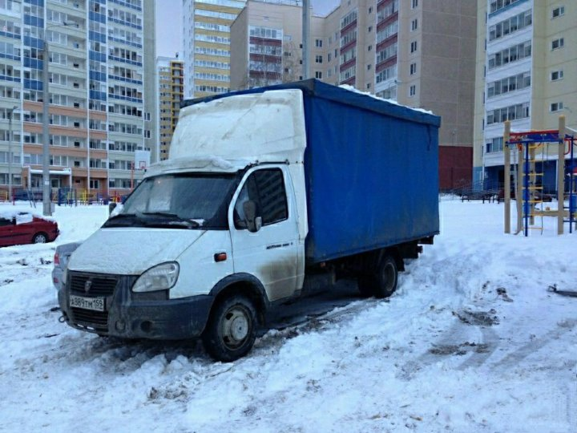

Подготовьте площадку для нового строительства или наведите порядок на объекте без лишних хлопот.
Компания Эко Вортекс предоставляет комплексные услуги для бизнеса в Краснодаре. Мы берем на себя весь цикл работ: от подготовки территории до финальной зачистки. Мы обеспечиваем официальный вывоз строительного мусора, предоставляя заказчику полный пакет отчетных документов. Мы не перерабатываем ничего; мы утилизируем, но как именно утилизируем, не говорим, сохраняя полную конфиденциальность наших процессов. Ниже представлены основные направления нашей работы:
Компания Эко-Вортекс предоставляет профессиональные услуги по расчистке территорий для бизнеса. Нашей ключевой специализацией является качественный вывоз строительного мусора Краснодар и обслуживание крупных заказов от УК и юридических лиц. Мы берем на себя все этапы подготовки площадки, освобождая заказчиков от тяжелого труда. Все собранные отходы мы утилизируем, предоставляя необходимые закрывающие документы.
Профессиональный демонтаж под ключ
Современные демонтажные работы требуют не только профильной спецтехники, но и грамотного инженерного подхода. Мы аккуратно и быстро разбираем ветхие постройки, промышленные объекты и конструкции любой сложности. Заказывая демонтажные работы Краснодар в нашей компании, вы получаете полный цикл услуг: от разрушения старых фундаментов до финальной очистки участка и направления всего объема мусора на легальную утилизацию.
Вывоз веток, пней и порубочных остатков
Мы оперативно забираем порубочные остатки после расчистки территорий. Транспортировка крупных веток, корней и пней выполняется собственной спецтехникой, что гарантирует высокую скорость работы на объектах любого масштаба.
Установка контейнеров
Для объектов с постоянным образованием отходов мы ставим бункеры-накопители. Установка контейнера происходит в день обращения на срок 3 дня. Если вы юрлицо и вас интересует долгосрочная аренда, мы предложим индивидуальные условия — просто свяжитесь с нашим менеджером.
Вывоз мусора Газелями
Когда тяжелая техника не может проехать, мы используем маневренные Газели. Это идеальный вариант для городских условий, позволяющий быстро осуществить вывоз строительного мусора. При необходимости наши профессиональные бригады организуют аккуратный вынос мусора Краснодар.
Механизированная уборка с грунта
Убрать отходы, смешанные с землей, крайне сложно. Мы осуществляем вывоз мусора Краснодар с грунта механизированным способом. Наши экскаваторы-погрузчики полностью счищают мусор вместе с верхним слоем грязи. В результате мы вывозим мусор до идеальной чистоты, оставляя голую, ровную землю. Доверяя нам вывоз мусора, вы получаете надежного партнера и стопроцентный результат!

Демонтаж
Полный цикл демонтажных работ: от сноса сооружений любой сложности до финальной расчистки площадки. Мы гарантируем высокую скорость выполнения за счет собственного парка спецтехники и обеспечиваем официальную утилизацию строительных отходов с предоставлением полного пакета документов.

Вывоз веток, пней и порубочных остатков
Оперативный сбор и транспортировка крупногабаритных корней, выкорчеванных пней и веток собственной спецтехкой. Мы быстро освобождаем территорию от древесных остатков в любых объемах, направляя весь собранный материал на утилизацию.

Установка контейнеров
Постановка вместительных бункеров-нак опителей в день обращения. Стандартный срок размещения на объекте составляет 3 дня. Для юридических лиц при долгосрочной аренде мы предлагаем индивидуальные условия сотрудничества — для расчета тарифа свяжитесь с нашим менеджером.

Вывоз мусора Газелями
Маневренное и экономичное решение для транспортировки средних объемов. Газели идеально подходят для объектов в городской черте или плотной застройке, куда не может проехать крупнотоннажная техника, обеспечивая оперативный вывоз.

Механизированная уборка с грунта
Специализированная расчистка территорий, где отходы смешаны с землей. Наши экскаваторы-погрузчики счищают мусор вместе с загрязненным верхним слоем. Вывозим мусор до идеальной чистоты — вы получаете ровную голую землю, готовую к застройке.
Кому может подойти услуга
Муниципальные учреждения
Уберём городские отходы без штрафов и лишней техники. Лицензия, акты 2-ФО, реестры отходов — 100% соответствие требованиям 44-ФЗ и 223-ФЗ. График работы 24/7, подача техники от 2 часов, при чрезвычайных ситуациях — приоритетная подача. Безопасная оплата по КБК (коду бюджетной классификации), закрывающие документы предоставляем в день выполнения работ.
Производственные предприятия
Обеспечиваем бесперебойный вывоз промышленных отходов, образовавшихся в процессе производства. Подбираем спецтехнику нужной грузоподъемности для работы с любыми объемами. Предоставляем весь пакет отчетности для экологического контроля.
Частные владельцы коттеджей или дач после стройки
Быстро очистим участок от завалов строительного боя, обрезков стройматериалов и грунта. Работаем аккуратно, не повреждая ландшафт и соседние постройки.
Девелоперы
Осуществляем комплексную подготовку площадок к новому строительству. Синхронизируем график вывоза с темпом работы ваших подрядчиков, чтобы избежать простоев на объекте.
Ландшафтные компании
Мы берем на себя вывоз пней, веток и порубочных остатков. Наличие собственных измельчителей и вместительных лодок до 27 м³ позволяет значительно снизить расходы на логистику.
ЖКХ/ТСЖ
Качественное обслуживание жилых кварталов по фиксированному графику. Наш транспорт работает круглосуточно, обеспечивая чистоту контейнерных площадок в любое время.
Агрохолдинги (теплицы, торфяной субстрат)
Профессиональный вывоз отработанного субстрата, ботвы и растительных отходов. Обеспечиваем быструю очистку крупных тепличных комплексов в межсезонье.
Строительные подрядчики
Надежный партнер для вывоза строительного мусора на любом этапе работ. От демонтажа до финальной отделки — подача техники в день заявки.
Владельцы сгоревших домов
Быстро и бережно разберем остатки сгоревших конструкций, организуем вывоз обугленных материалов и подготовим площадку к новому строительству.
Гаражные кооперативы (металлолом)
Организуем оперативный вывоз крупного металлолома и бесхозных конструкций. Выплачиваем стоимость лома на месте (для объемов от 5 тонн).
Фермеры
Поможем освободить сельхозугодья от завалов веток, старой техники и другого мусора, мешающего работе.
мусора онлайн
Наглядный пример того, как комплексный подход к очистке территорий экономит время крупного заказчика.
В карусели представлены реальные кадры с наших объектов, где техника «Эко-Вортекс» готовит площадки к новому этапу использования. Мы обеспечиваем непрерывный цикл расчистки для бизнеса: профессиональный демонтаж ветхих строений сменяется мгновенной погрузкой отходов. Теперь наш главный акцент — это комплексный вывоз строительного мусора Краснодар, полностью закрывающий потребности юридических лиц и управляющих компаний.
Наши машинисты и бригады обладают внушительным практическим опытом, что позволяет нам комбинировать услуги для идеального результата. Если отходы долго лежали на земле, мы применяем механизированную уборку с грунта: наши собственные экскаваторы-погрузчики счищают мусор вместе с загрязненным верхним слоем, оставляя после себя идеально чистую, голую землю. После сезонной расчистки участков мы также берем на себя оперативный вывоз веток, массивных пней и порубочных остатков.
Мы задействуем технику под любые условия. Там, где крупнотоннажные машины не проедут, наши специалисты организуют аккуратный вынос мусора Краснодар с последующей быстрой погрузкой в маневренные Газели. Для строительных или торговых объектов мы устанавливаем вместительные контейнеры в день обращения на стандартный срок 3 дня. При этом для юрлиц при долгосрочной аренде бункеров менеджер всегда подберет индивидуальные и выгодные условия.
Самое важное в нашей работе — строгие обязательства по соблюдению экологических норм. Мы гарантируем, что весь собранный объем отходов без простоев направляется на официальную утилизацию. Итогом нашего сотрудничества становится полностью свободная территория и предоставление полного пакета закрывающих документов, обеспечивающих вашу абсолютную юридическую безопасность.


Частые вопросы: вывоз мусора Краснодар и комплексная расчистка территорий
Перед тем как заказать профессиональный демонтаж, механизированную очистку участков или масштабный вывоз строительного мусора, у корпоративных заказчиков часто возникают вопросы о сроках, используемой спецтехнике и юридических гарантиях. В компании «Эко-Вортекс» мы ценим прозрачность при работе с бизнесом и управляющими компаниями, поэтому собрали для вас подробные ответы на самые популярные запросы.
Грамотная организация процесса позволяет нам решать задачи комплексно. Мы не только аккуратно сносим сооружения любой сложности, но и оперативно устанавливаем вместительные контейнеры, забираем порубочные остатки (ветки и пни), а также осуществляем вывоз мусора с грунта механизированным способом, счищая хлам до идеально ровной и чистой земли. Ознакомьтесь с информацией ниже, чтобы убедиться в нашем профессионализме и понять, как именно мы обеспечиваем высочайшую скорость работы, легальность и официальную утилизацию всех образовавшихся отходов с предоставлением полного пакета документов.
Что включает в себя демонтаж?

Комплексные демонтажные работы подразумевают полный снос старых строений, разборку конструкций и очистку участка. Мы собираем весь строительный мусор и обеспечиваем его официальную утилизацию.
Какая техника используется?

В нашем распоряжении находится собственный автопарк. Для демонтажа мы применяем современные экскаваторы и маневренные погрузчики и ломовозы, что позволяет выполнять заказы любой сложности максимально оперативно.
Куда вывозится мусор?

Мы строго соблюдаем экологическое законодательство РФ. Все отходы, образовавшиеся после того как завершены демонтажные работы Краснодар, направляются на законную утилизацию с выдачей отчетных актов.
Возможен ли снос сложных объектов?

Да, наши машинисты обладают профильным опытом для работы с аварийными и нестандартными постройками. Мы проводим демонтаж предельно аккуратно, гарантируя полную сохранность соседних зданий на участке.
Как быстро начинается работа?

Наличие свободных машин в автопарке Эко-Вортекс позволяет нам реагировать на заявки без долгих задержек. Мы оперативно подаем технику на объект и начинаем демонтажные работы в строго согласованное время.
Выдаете ли вы документы?

Легальность является нашим главным приоритетом. По завершении очистки территории каждый заказчик получает пакет закрывающих документов, подтверждающих, что утилизация мусора прошла полностью официально.